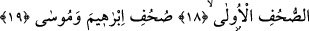
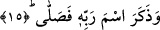

AHİRET DAHA HAYIRLI
VE DAHA DEVAMLIDIR
14. Temizlenen kimse kuşkusuz kurtuluşa ermiştir.
15. Rabbinin adını anıp O’na namaz kılan (kurtuluşa ermiştir.)
16. Fakat siz (ey insanlar!) dünya hayatını tercih ediyorsunuz,
17. Oysa âhiret daha hayırlı ve daha (devamlıdır) kalıcıdır.
18. Doğrusu bunlar (bu anlatılanlar) ilk sahifelerde
19. İbrahim ve Mûsâ’nın kitaplarında da vardır.
Yani hoşlanmadığı şeylerin başına gelmesinden kurtulmuştur, umduğu şeyleri elde
etmiştir temizlenen. Âyette yer alan “tezekka” fiili “temizlenmek” masdarından
gelebileceği gibi “artmak, ziyadelenmek” masdarından türemiş de olabilir. Buna göre
âyetin mânâsı; elbette felaha ermiştir, inkâr ve mâsiyetlerden öğüt almak, öğütten
yararlanmak sûretiyle temizlenen demek olur. İkinci anlama göre ise; elbette felaha
ermiştir, takvâda Allah’tan huşu duymada ileri giden demek olur. Âyetin başındaki
“kad” kelimesi şunun için getirilmiştir: Bundan önceki âyette öğüt almaktan kaçınan
kimsenin kötü âkıbeti haber veriliyordu. Bunu duyan kimse bu öğüttten yararlanan
kimsenin iyi âkıbetinin haberi verileceği beklentisi içerisine girer ve bunu bekler. İşte
bundan dolayı ‘kad’ getirilmiştir.
15. Rabbinin adını anıp namaz kılan (kurtuluşa ermiştir.)
“Rabbinin adını” kalbi ile ve dili ile “anıp namaz kılan” yâni beş namazı eda eden.
Nitekim namazın eda edilmesini Cenab-ı Hakk başka bir âyette şu şekilde emir
buyuruyor: “Beni anmak için namaz kıl” (Ta-ha, 20/14) Buna göre âyetin mânâsı;
namazın başlangıç tekbirini alıp sonra namaz kılan demek olur. Burada “zikir”den
maksad namazın başlangıcındaki “Allahu ekber” sözüdür, ancak Hanefi mezhebi
âlimlerine göre zikir sâdece “Allahu ekber”den ibaret değildir. Çünkü zikir geniş
kapsamlı bir ifâdedir. “Fesallâ” kelimesinin başındaki “fa” harfi, atıf harfi olup bu harf
“Allahu ekber” ifâdesinin namaza dâhil olmadığını bir başka ifâdeyle tekbirin namazın